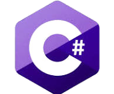
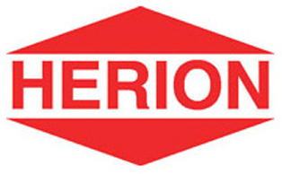

Projekteim
Az alábbi kártyák hivatottak bemutatni a tanulmányaim fontosabb mérföldköveit.
A "Tovább" gombra
kattintva részletes információkat olvashat az adott mérföldkőhöz kapcsolódóan.

Programfejlesztés
TovábbRobottechnika
TovábbRendszerüzemeltetés
Tovább
